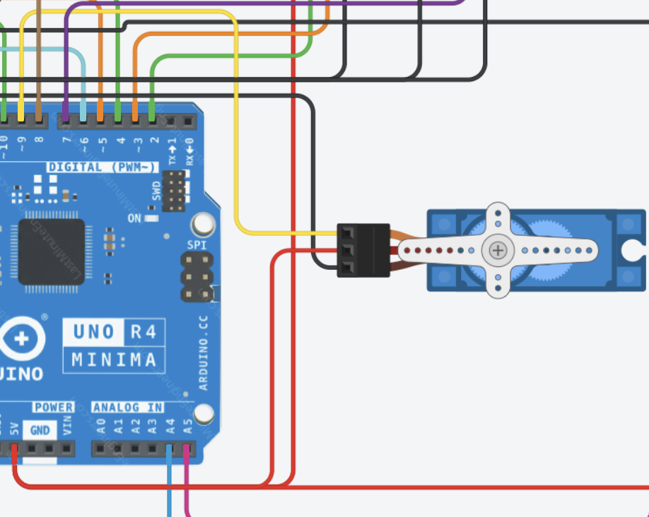
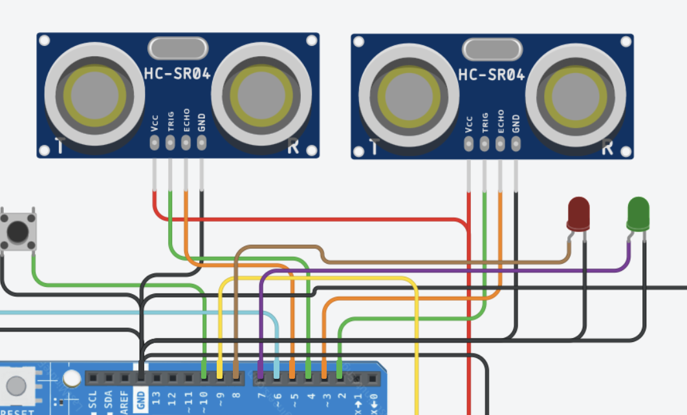
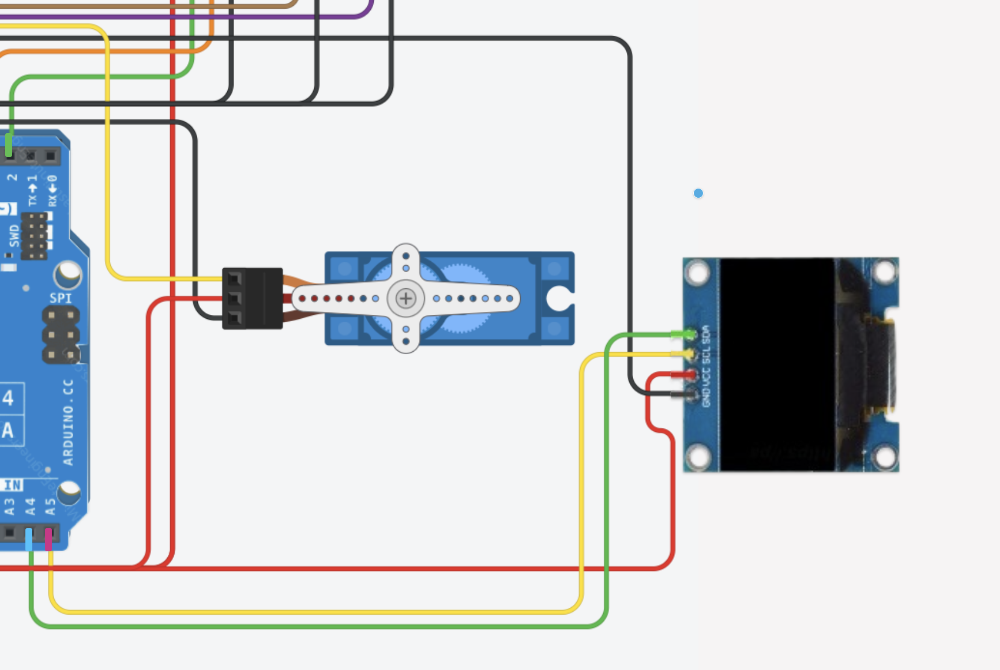
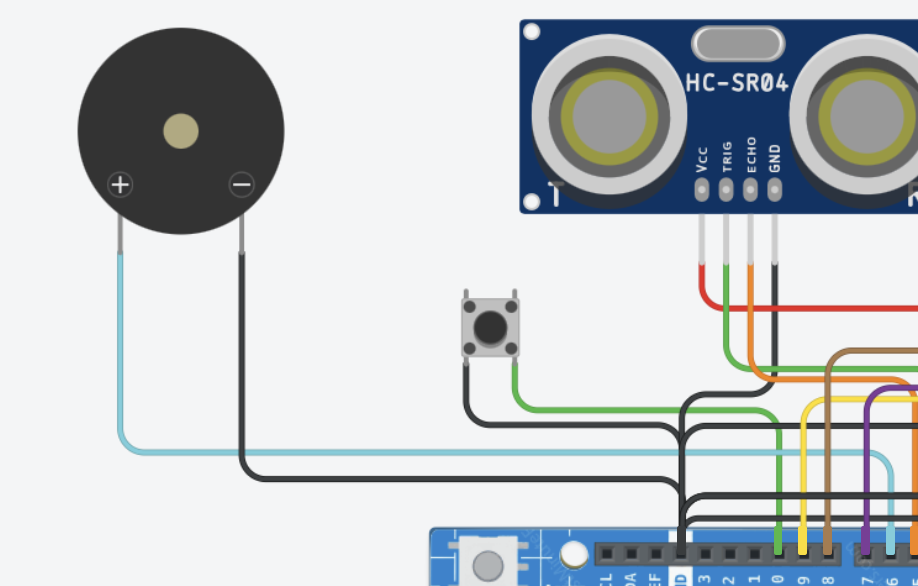

Projet arduino de barrière Péage
I Explications

Introduction du projet :
Composants utilisés :
Composants d'entrée
- Capteur de distance : C'est une des pièces les plus importantes du projet, c'est elle qui va détecter la voiture devant la porte de garage pour permettre d'ouvrir la porte.
- Bouton : Il sert à ouvrir la barrière pour passer au péage.
Composants de sortie
- Servomoteur : C'est un moteur très important car il nous servira pour ouvrir la porte de garage. Il est connecté à un strong pin digital PWM.
- Led : Elle est simplement relié à un pin digital* (ici, pin 11). Nous n'utiliseront poas le signal PWM. Elle nous servira à annoncer que la porte va se déplacer.
- Buzzer : Il nous servira pour nous prévenir qu'une voiture a été détectée et que la porte va s'ouvrir.
Carte électronique :
- Arduino UNO R4 minima
Fonctionnement du projet :
Fonctionnement des composants indépendants :
Le servomoteur : Il se déplace en observant le signal PWM d'un pin digital. En tempos réel, il regarde combine de temps la pin digital lui envoie
un signal Haut pour le comparer au signal suivant. Il est dôté d'un potentiomètre pour savoir ou il est dans l'espace et savoir de combine de degré
il faut qu'il se déplace et pouvoir se corriger en temps réel.
Le capteur de distance : Il y a 4 broches : 5V et GND et 2 autres broches : TRIG et ECHO
. Le premier, TRIG, c'est la broche qui est relié à l'emetteur, le second, ECHO est relié au receveur.
On envoie du courant à TRIG et on démarre un chronomètre au bout de 10 microsecondes (pour stabiliser), on arrête d'envoyer du courant à l'emetteur
et on active ECHO pour receoir le signal, quand ECHO reçoit le signal, on arrête le chronomètre. Maintenant on a une mesure de temps : le
temps que met l'onde sonore pour faire un allé vers l'objet puis revenir, on connais la vitesse du son dans l'air on multiplie ce temps par la vitesse du son et on divise par
2 (car l'onde sonore fait un allé et retour), on a notre distance ! On stocke cette distance dans une variable et on fait ça des centaines de fois par seconde pour connaitre
précisément la distance de l'objet devant nous.
Ecran OLED : L'écran OLED est un peu plus compliqué, il utilise les pin A5 et A4 car ils sont compatibles SCL et SDA, ce sont des technologies qu'utilise notre écran. Nous utilisons une bibliothèque spéciale pour cet écran.
Attention si vous essayez de réutiliser l'écran faites attention à la mémoire de votre carte, l'écran consomme beaucoup de mémoire pour être fluide, si vous utiliser une carte
arduino UNO R4 c'est bon car il y a 32ko de mémoire mais une R3 n'a que 4ko donc il faudra utiliser un autre moyen plus léger. Vérifier bien la mémoire de votre microcontrôleur.
Fonctionnemnt du projet :
Nous utilisont une machine à état également, mais ici, il y a 6 états (0 à 5).
L'état 0 est l'état de base, il englobe aussi le fait que la barrière s'ouvre puisse qu'il n'y a pas de chrono, elle s'ouvre à partir du
moment ou le bouton est appuillé.
L'état 1 et 2 sont des "micro étapes" la première sert à vérifier si un voiture est détectée, si oui, elle lance un chrono et la deuxième regarde si au
bout de 500ms si la voiture est toujours la et si oui passe à l'étape 3 sinon on retourne à l'étape 1 qui attends que la voiture passe. Cela évite les problèmes
de capteur car une voiture ne peut pas rester moins de 10ms sous le cateur donc cela permet d'petre sur que la valeur correspond bien à la voiture qui passe.
L'état 3 regarde si au bout de 500ms la voiture est partie, si oui, elle ferme la barrière, sinon, elle écrit obstacle dans le moniteur série et affiche "veuillez
passer" sur l'écran et passe à l'étape 4. Quand la barrière est fermée, on retourne à l'étape 0 pour recommencer.
L'état 4 :Si l'obstacle n'est plus présent on passe à l'étape 5.
L'étape 5 consite à fermer la porte et écrire merci sur l'écran. À la fin, on retourne à l'étape 0.
II - schémas
Explication du schéma :
Schéma du servomoteur :

Ci-contre, le schéma du servomoteur. On voit qu'il est branché au pin digital N°9 car c'est un pin digital compatible PWM, il est aussi relié au 5V et au GND.
Schéma des capteurs de distance

Voici le schéma des capteurs de distance :
Pour le premier, la broche TRIG est reliée au pin digital N°2 et ECHO au pin digital N°3, la broche VCC est reliée au 5V et la broche GND au GND.
Pour le schéma du deuxième capteur de distance, la broche TRIG est reliée au pin digital N°4 et ECHO au pin digital N°5, la masse et le VCC sont identiques.
Schéma de l'écran OLED

Pour l'écran OLED. Les broches SCL et SDA sont respectivement reliées aux pins A5 et A4, elles sont compatibles avec SCL et SDA que l'écran utilise. Les broches VCC et GND sont reliées au 5V et au GND.
Shéma du buzzer et du bouton

Voici le shéma du buzzer et du bouton. Le bouton est branché sur le pin n°9 et relié à la masse, le buzzer est relié au pin N°6 et également à la masse.
Shéma du servomoteur
Ci-contre, le schéma du servomoteur. On voit qu'il est branché au pin digital N°9 car c'est un pin digital compatible PWM, il est aussi relié au 5V et au GND.
III - code
Setup :
void setup() {
myservo.attach(9);
pinMode(button, INPUT_PULLUP);
pinMode(PIN_TRIG, OUTPUT);
pinMode(PIN_TRIGB, OUTPUT);
pinMode(PIN_ECHO, INPUT);
pinMode(PIN_ECHOB, INPUT);
pinMode(buzzer, OUTPUT);
pinMode(led_Red, OUTPUT);
pinMode(led_Green, OUTPUT);
myservo.write(0);
Serial.begin(9600);
u8g2.begin();
u8g2.clearBuffer();
u8g2.setFont(u8g2_font_helvB18_tr);
u8g2.drawStr(10, 30, "Bonjour !");
u8g2.sendBuffer();
} Ici, on initie le servomoteur sur la pin PWM N°9, initie l'écran et définisons les composants en entrée ou en sortie.
Les définitons pour l'écran et le servomoteur :
Bibliothèques
Voici les bibliothèques que l'on inclu avec #include pour utiliser le servomoteur et l'écran.
#include <Servo.h>
#include <U8g2lib.h>Servo.h est une bibliothèque pour le servomoteur, elle a des fonctions simples.
U8g2lib.h est une bibliothèque pour l'écran, elle a des fonctions simples pour écrire et dessinersur l'écran.
Servomoteur
Servo myservo;myservo est une fonction de la librairie servo, elle sert a doné un nom à notre servomoteur pour pouvoir le désigner.
Ecran
U8G2_SSD1306_128X64_NONAME_F_HW_I2C u8g2(U8G2_R0, /* reset=*/ U8X8_PIN_NONE);Cette ligne sert à renseigner les caractéristiques de l'écran pour que la bibliothèque sache comment envoyer les infos, on ne précise pas sur quelle broche il se trouve car on ne peut en même qu'un seul par carte, on les connectent aux broches A5 et A4 de la carte qui gèrent l'écran i2c.
Loop
void loop() {
unsigned long actuel = millis();
// --- Mesure de distance, une fois toutes les 60 ms ---
if (actuel - derniereMesure >= 60) {
derniereMesure = actuel;
digitalWrite(PIN_TRIG, LOW);
delayMicroseconds(2);
digitalWrite(PIN_TRIG, HIGH);
delayMicroseconds(10);
digitalWrite(PIN_TRIG, LOW);
long dure = pulseIn(PIN_ECHO, HIGH, 30000); // timeout 30 ms
if (dure > 0) { // ignore mesures ratées
long d = (dure * 0.034) / 2;
distance = constrain(d, 2, 100);
}
Serial.println("distance");
Serial.println(distance); // à retirer une fois que tout marche
}
if (actuel - derniereMesureB >= 60) {
derniereMesureB = actuel;
digitalWrite(PIN_TRIGB, LOW);
delayMicroseconds(2);
digitalWrite(PIN_TRIGB, HIGH);
delayMicroseconds(10);
digitalWrite(PIN_TRIGB, LOW);
long dureB = pulseIn(PIN_ECHOB, HIGH, 30000); // timeout 30 ms
if (dureB > 0) { // ignore mesures ratées
long dB = (dureB * 0.034) / 2;
distanceB = constrain(dB, 2, 100);
}
Serial.println("distance B");
Serial.println(distanceB); // à retirer une fois que tout marche
}
// --- Machine à états ---
if (etape == 0) {
digitalWrite(led_Red, HIGH);
digitalWrite(led_Green, LOW);
if (!dejaDitB) {
u8g2.clearBuffer();
u8g2.setFont(u8g2_font_helvB18_tr);
u8g2.drawStr(10, 30, "Bonjour !");
u8g2.sendBuffer();
dejaDitB = true;
}
// Attente du bouton
if (digitalRead(button) == LOW) {
tone(buzzer, 1175, 300);
myservo.write(50);
depart = actuel;
Serial.println("Bouton appuyé, barrière ouverte");
u8g2.clearBuffer();
u8g2.setFont(u8g2_font_helvB12_tr);
u8g2.drawStr(10, 30, "Barrière ouverte.");
u8g2.sendBuffer();
digitalWrite(led_Red, LOW);
digitalWrite(led_Green, HIGH);
etape = 1;
}
} else if (etape == 1) {
if (distance < 9) {
depart = actuel;
etape = 2;
}
} else if (etape == 2) {
if (distance < 9) {
if (actuel - depart >= 500) {
depart = actuel;
etape = 3;
}
} else {
etape = 1;
}
} else if (etape == 3) {
if (actuel - depart >= 500) {
if (distance >= 9 && distanceB > 4) {
myservo.write(0);
Serial.println("Barrière fermée");
u8g2.clearBuffer();
u8g2.setFont(u8g2_font_helvB18_tr);
u8g2.drawStr(30, 60, "Merci !");
u8g2.sendBuffer();
digitalWrite(led_Red, HIGH);
digitalWrite(led_Green, LOW);
dejaDit = false;
dejaDitB = false;
delay(500);
etape = 0;
} else {
Serial.println("Obstacle");
if (!dejaDit) {
u8g2.clearBuffer();
u8g2.setFont(u8g2_font_helvB12_tr);
u8g2.drawStr(10, 30, "Veuillez passer");
u8g2.sendBuffer();
dejaDit = true;
}
etape = 4;
}
}
} else if (etape == 4) {
// Obstacle présent : on attend qu'il parte
if (distance >= 9 && distanceB > 4) {
depart = actuel; // le chrono démarre ici, une seule fois
etape = 5;
}
} else if (etape == 5) {
myservo.write(0);
Serial.println("Merci !");
u8g2.clearBuffer();
u8g2.setFont(u8g2_font_helvB18_tr);
u8g2.drawStr(10, 30, "Merci !");
u8g2.sendBuffer();
digitalWrite(led_Red, HIGH);
digitalWrite(led_Green, LOW);
dejaDit = false;
dejaDitB = false;
delay(500);
etape = 0;
}
}On initie actuel qui est égal à millis(). Ensuite, on mesure la distance toutes les ms sur les 2 capteurs de distance.
On commence à l'état 0, on allume la led rouge du feu bicolore, On affiche Bonjour ! sur l'écran, le déjaDit sert à ne l'afficher qu'une seule fois p
our ne pas surchager la mémoire. Quand le bouton est appuillé, on allume le buzzer avec une tonalité de 1175 pendant 300 milisecondes et on ouvre la porte.
On met a jour départ qui nous servira a savoir depuis combien de temps la barrière est ouverte. On affiche dans le moniteur et sur l'écran Barrière ouver
te et on allume la led verte (en éteignant la led rouge). On passe à l'état 1.
Si un voiture est présente, soit une distance inférieure à 9cm, on me
t a jour le chrono et passe à l'état 2. Si la voiture est toujours là au bout de 500 milisecondes on met a jour le chrono (oui encore) et on passe à l'état
3. Sinon soit la distance supérieure à 9cm, on retourne à l'état 1, l'étape 2 nous sert à vérifier si la voiture rest au moins 500 milisecondes sous le capt
eur pour être sur Que ce soit une voiture qui passe et pas un bug du capteur.
Si ça fait 500 milisecondes donc, on vérifie que distance est supérieure à
9 et que distanceB est supérieure à 4. Cette vérification à double capteur permet d'être sûr que la voiture ne se trouve pas dessous. En effet, les voitures
on des formes spéciales qui mennent à faire croire au capteur que la voiture est absente, avec un deux capteurs, le risque est minimisé.
On ferme la bar
rière, affiche barrière fermée, éteind la led verte au profit de la led rouge et retourne à l'état 0. Si la voiture est toujours présente, on affiche Veuillez passer et on va à l'étape 4.
Si l'obstacle est présent, on attends qu'il parte car s'il est la, le code reste dans l'état 4 j'usqu'a ce qu'il
parte. Quand il part, on va à l'état 5 et met à jour le chrono.
A l'étape 5, on ferme la barrière, affiche merci, et met a jour déjaDit pour pouvoir réa
fficher des infos. Le petit délai de 500 milisecondes sert à aérer le tout et attendre un petit peu avant de recommencer à l'étape 0.